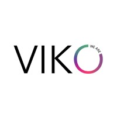
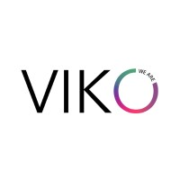

Codigo abierto contra la despoblacion
De Hacker Days a Punto de Agua
Agustin Jamardo · Rural Hackers
esLibre 2026— Rosabel y Olga, vecinas de Anceu que gestionan el agua de su aldea
El problema invisible
aldeas en Galicia con
gestion comunitaria del agua
- ~100 contadores leidos a mano, 3 veces al año
- Deteccion de fugas, facturacion, cobros
- Conocimiento no documentado
- Gestionado por mayores de 60 años
- 80 euros/año por hogar gracias a trabajo no remunerado
de forma colectiva?
Agua, luz, pastos, montes comunales...
Rural Hackers
Tecnologia y comunidad contra la despoblacion
Rural Hackers
Quienes somos
Asociacion gallega sin animo de lucro que usa tecnologia y comunidad como herramientas contra la despoblacion.
- Residencias, hackathons, encuentros
- Base en Anceu Coliving, Pontevedra
- Interseccion de tech y rural
Por que software libre?
Soberania
El codigo pertenece a la comunidad, no a una empresa
Adaptabilidad
Cada territorio puede modificarlo a sus necesidades
Coste
Sin licencias, sin dependencia de proveedores
Transparencia
Las comunidades pueden auditar que hace el software
La trampa de las "soluciones tecnologicas"
El cementerio de apps rurales esta lleno de proyectos que nadie usa
- Diseñadas desde un despacho urbano
- Sin entender el contexto real
- Tecnologia que complica en vez de simplificar
- Abandonadas tras la subvencion
Hacker Days
Una semana, un reto real, una solucion util
Hacker Days
Que es
Una semana intensiva donde profesionales diversos colaboran para resolver un reto rural real.
- Ingenieria, diseño, UX, comunicacion
- Vecinas del territorio
- 14 participantes en Anceu Coliving
- Alojamiento y comidas incluidos

Como elegimos el reto
- Escuchamos primero: conversaciones con vecinas, asociaciones, ayuntamientos
- Problema real: algo que afecta a la comunidad hoy
- Alcance abordable: resoluble en una semana
- Replicable: que pueda servir a otras comunidades
El reto lo define la comunidad, no nosotros.
Las fases de la semana
Que lo hace diferente
Hackathon clasico
- 48 horas
- Reto abstracto o corporativo
- Prototipo que se abandona
- Competicion individual
Hacker Days
- 7 dias
- Reto de una comunidad real
- Compromiso de continuidad
- Colaboracion con vecinas
Punto de Agua
La solucion que construimos
Hacker Days 2025
El reto
Crear una web open source para que las comunidades rurales gestionen su agua de forma sencilla.
- Autenticacion y gestion de recursos
- Registro de contadores y consumos
- Facturacion y cobros
- Notificaciones y alertas
puntodeagua.com
Diseñamos con, no para
- Inmersion primero: dos dias entendiendo el problema antes de escribir codigo
- Vecinas presentes toda la semana, no solo al final
- Textos claros: nada de jerga tecnica
- Sencillez: que reemplace al papel, no que lo complique
- Replicable: que otra aldea pueda usarlo sin nosotros
La tecnologia no es la solucion. Es una herramienta.
Lo que aprendimos
- Las usuarias saben lo que necesitan — solo hay que escuchar
- Menos funcionalidades, mejor implementadas
- El prototipo queda operativo en Anceu para validacion real
- La documentacion es parte del producto
Como replicarlo
Recursos para tu territorio
Organiza tu propio Hacker Days
Esto ha funcionado asi porque nace de nuestro contexto: una aldea concreta, unas vecinas concretas, unos problemas concretos. No copies el formato — aprende del tuyo.
- Entiende tu territorio: lo que funciona en Anceu no tiene por que funcionar en tu pueblo
- Escucha antes de proponer: el reto lo define la comunidad, no tu
- Mezcla perfiles: lo tecnico sin lo humano no sirve
- Compromiso despues: un hackathon sin continuidad es turismo tecnologico
Colabora
Como persona
- Participa en Hacker Days 2026
- Contribuye codigo a Punto de Agua
- Traduce documentacion
- Cuenta tu experiencia rural
Como organizacion
- Propon un reto de tu territorio
- Cede espacio para un evento
- Patrocina Hacker Days
- Replica el modelo
El codigo abierto no es solo una licencia.
Es una forma de construir tecnologia que pertenece a las comunidades que la usan.
— Rosabel
tu codigo
Gracias a quienes lo hacen posible
Impulsan Hacker Days 2025

 



Han confiado en Rural Hackers
Gracias!
Agustin Jamardo · Rural Hackers